This brief post will speedrun attention and transformers. This idea transformed the world. I'll go fast because the world is now running out of attention.
Unit of input information that is represented as a vector for a machine. In LLMs, this would can be a word, half a word, a chunk of words (depending on the LLM). Just know that this is a "unit" of info that models process on.
Lets walk through the pipeline of what a LLM sees after you prompt it. Here, I will show the self-attention layer. First, your prompt is broken up into tokens. The tokens are then transformed to numbers that the model understands. We call this an embedding, $X$.
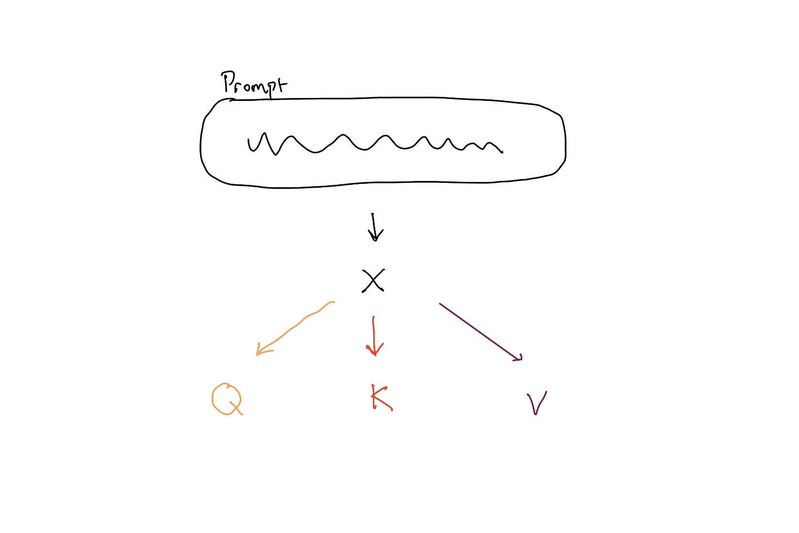
The embedding $X$, creates 3 matricies $Q, K, V$. We will learn the weights (in training): $$ Q = W_QX \\ K = W_KX \\ W = W_WX $$
Let's understand $QKV$ like we are buying a house.
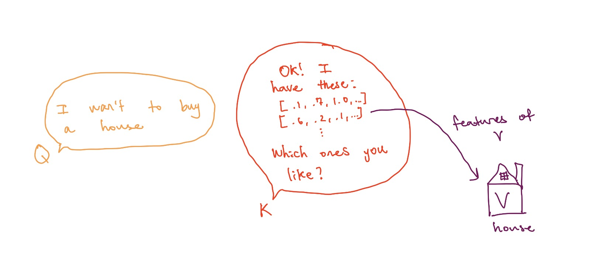
$Q$ is the buyer. Buyer want house.
$K$ is real estate agent. Agent want to advertise house using its features.
$V$ is the house. House have content (stuff inside).
We seperate the roles because this way, the each role learns specific things so the job is done better. During training, train the weights $W_Q, W_K, W_W$ so each person gets better at their role.
Now, $Q$ wants to shop for houses. The houses that interest $Q$ are the ones with similar features to what $Q$ is looking for in $K's$ advertisement. We can compute a similarity function to the houses we had in mind: $$ E = \frac{QK^T}{\sqrt{d}} $$ Visually:
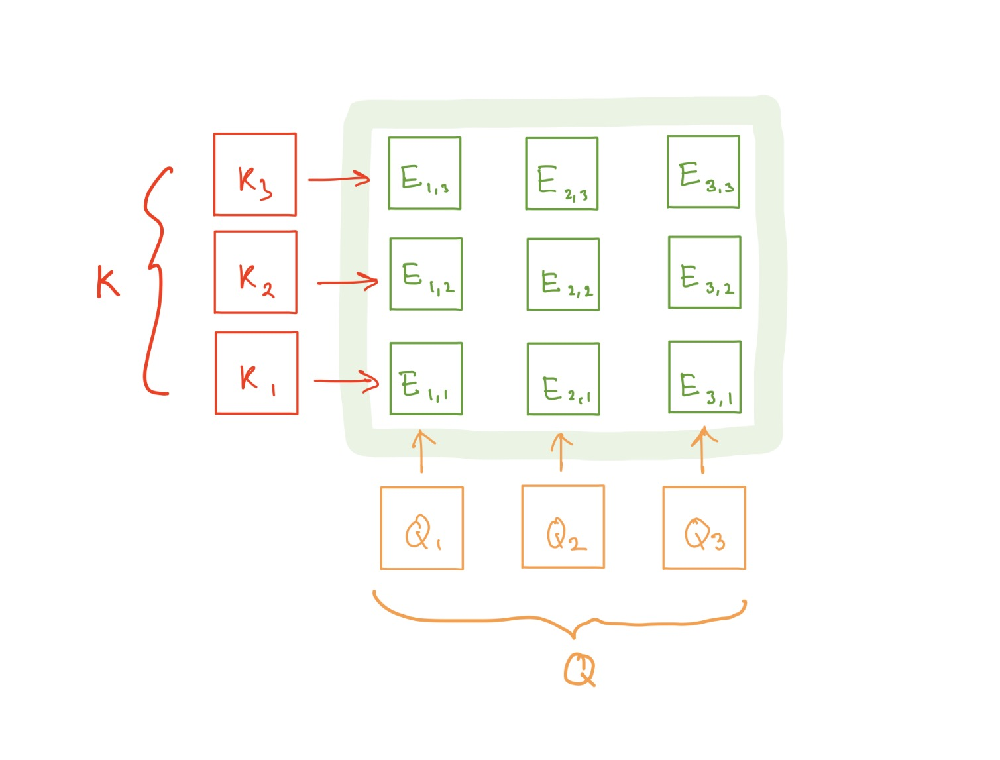
Notice that this type of matrix multiplication can be done very fast with GPUs.We divide by $\sqrt{d}$ to normalize, helping us avoid exploding and vanishing gradients. $\sqrt{d}$ is our standard deviation. The assumption is $q_i$ and $k_i$ have $\mu=0$, $var=\sigma^2=1$
$$ \begin{aligned} Q\cdot K &= \sum_{i=1}^{d_k}q_i k_i\\ E[q_i]&=E[k_i]=0,\quad \operatorname{Var}(q_i)=\operatorname{Var}(k_i)=1\\ \operatorname{Var}(q_i k_i)&=E[q_i^2]E[k_i^2]=1\\ \operatorname{Var}(Q\cdot K)=\sigma^2&=\sum_{i=1}^{d_k}1=d_k\\ \sigma&=\sqrt{d_k} \end{aligned} $$
$E$ represents the similarity scores between the house we have in mind and the agent's recommendation. However, We want this to be a probability to make sense of raw numbers. We can use softmax. Each house then occupies some fraction of our total attention (A): $$ A = softmax(E) $$ Visually:
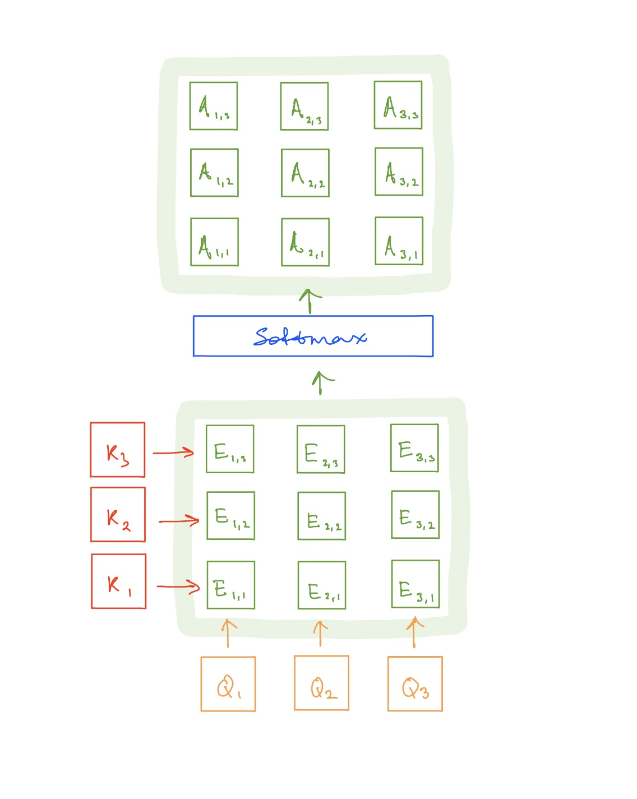
Now we know how much attention we should pay to each house! We need to visit the houses ($V$) now. Let $Y$ denote the output of model. For us, $Y = $ total value ($$$) of houses we chose to see.
To do this, we can just take a weighted sum between our attention scores and $V$: $$Y = \sum_j A_{i,j} V_j$$ This is the weighted sum of how much attention we spent at each house and the value of the house, providing us with the total value $Y$.
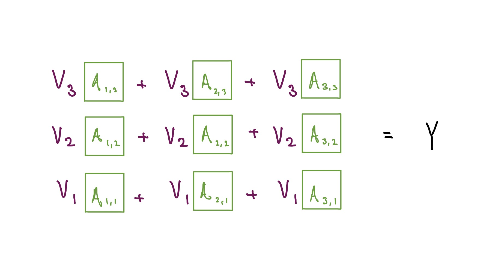
Annnnnnddddddd....... that's actually all of self attention. We went from input $X$ to output $Y$. Now let's zoom out and look at the pipeline we went through:
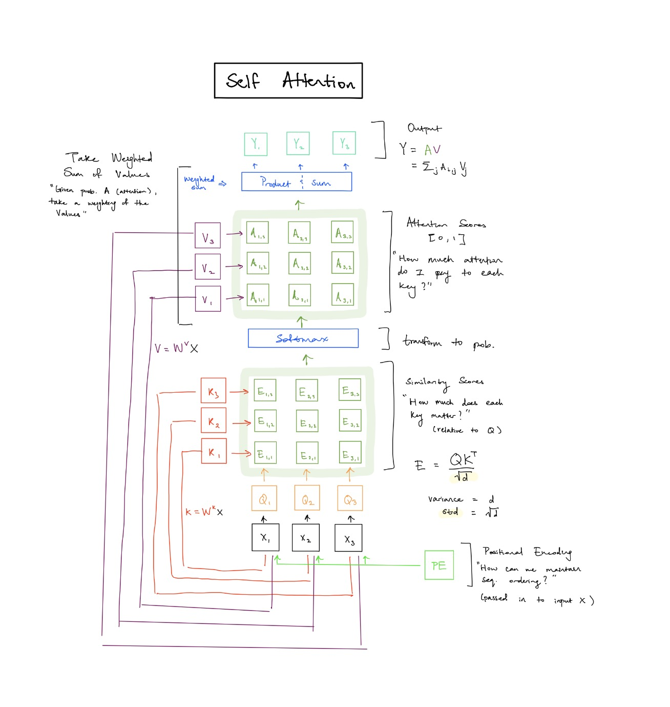
Notice there is a PE box. PE stands for Positional Encoding. Originally transformers were designed for sequences (successor of RNN, LSTMs). In our pipeline, we never tracked sequences. We can run our input through a PE function and add it to keep track of sequences. Here are 2 popular options:
$$ PE(pos) = a \cdot pos + b $$
$$ \begin{aligned} PE_{(pos,2i)} &= \sin\left(\frac{pos}{10000^{2i/d_{\text{model}}}}\right)\\ PE_{(pos,2i+1)} &= \cos\left(\frac{pos}{10000^{2i/d_{\text{model}}}}\right) \end{aligned} $$
Now, if we duplicate the self-attention layers, we get multi-headed Self Attention (MHA). By duplicating self attention, we each head can attend to different parts of the input (hopefully).
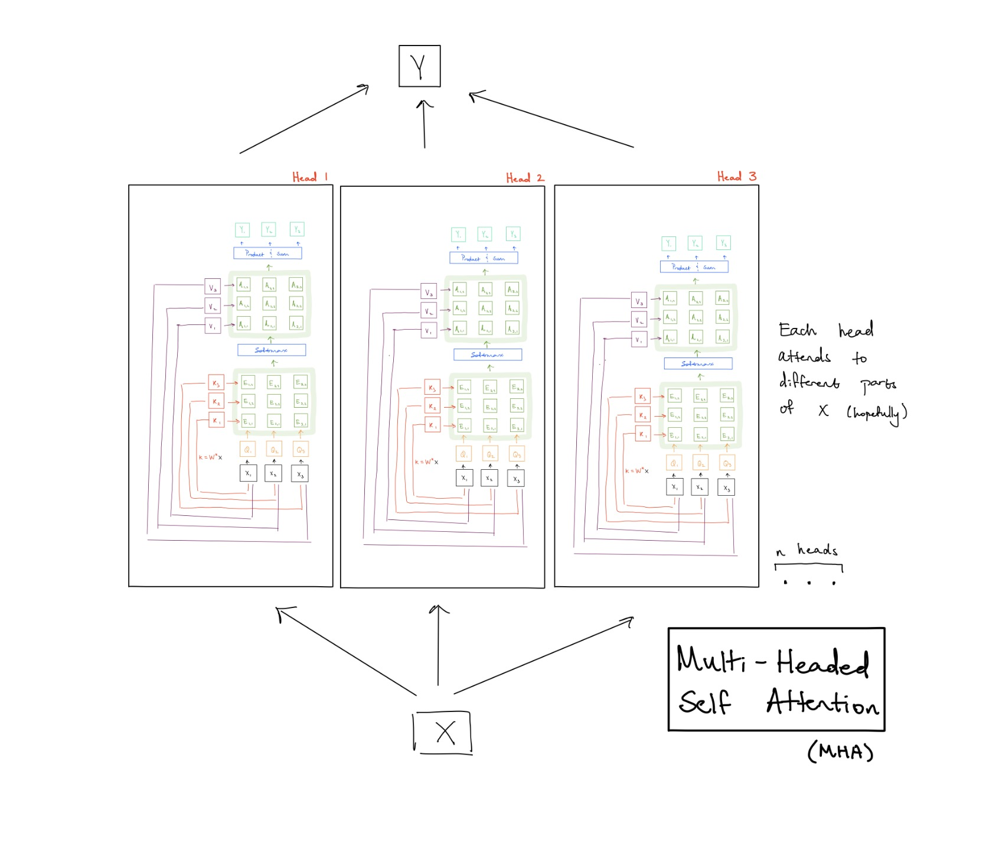
Let's use the MHA layer to create a transformer block:
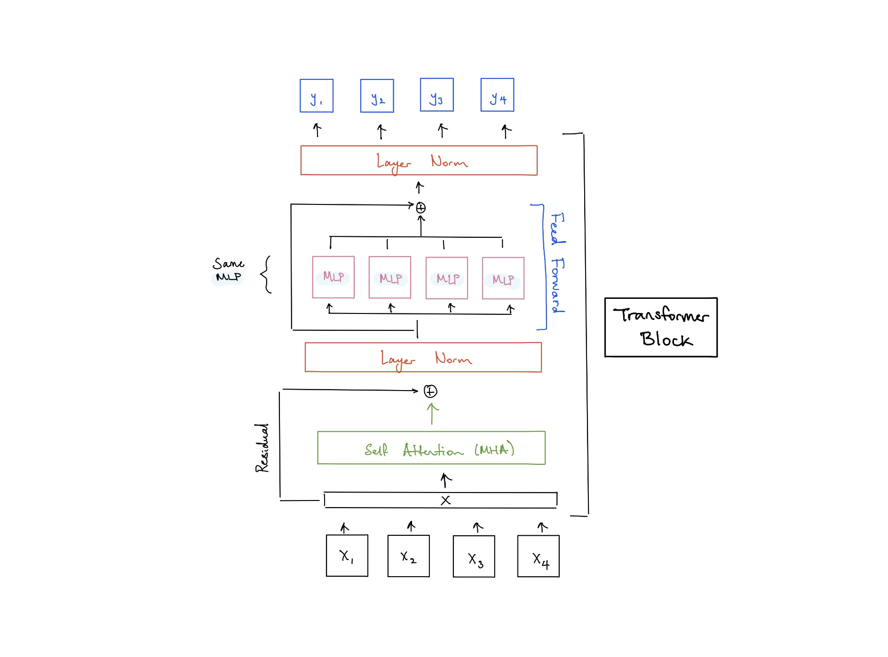
This adds additional infra (residuals, MLP, layer norm) to form a transformer block. We can stack these block units to form a transformer.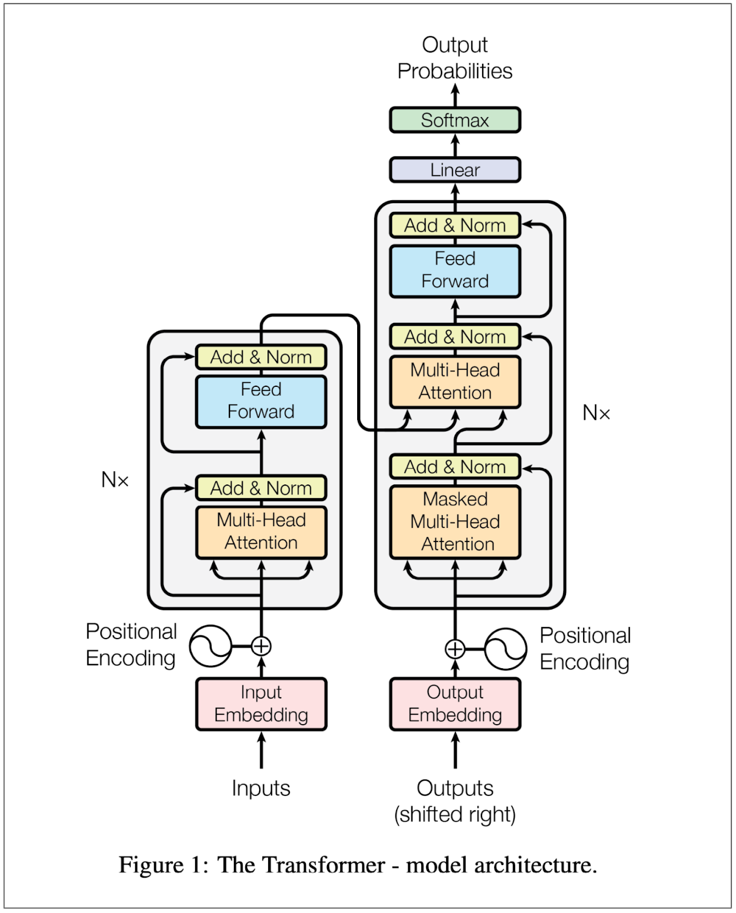
This specific architecture consists of an encoder (left) and decoder (right). The encoder produces representations of one modality and decoder uses encoder outputs to predict what comes next. However, to train the decoder, we can't have tokens looking at all the other tokens. We need a ..... MASK!
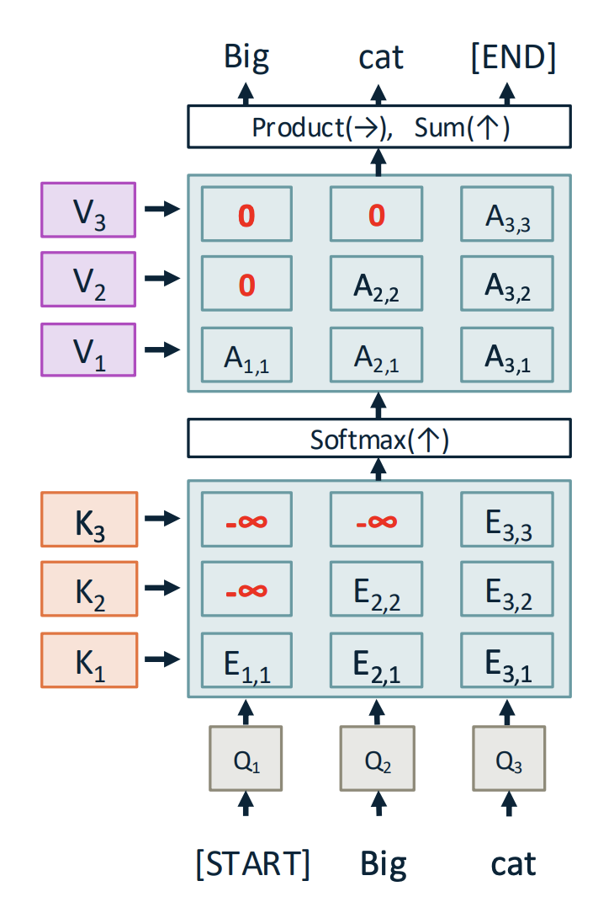
We mask using $-\infty$ This way, the softmax of $-\infty$ pushes the attention of $E$ at $i,j$ to 0.
For the decoder, we shift the inputs to the right, using <SOS> token and <EOS>.
Thus, during training, the decoder sees:
<SOS> & encoder ouput -> predicts next token.
It then repeats this until it sees <EOS>.
Ok so what did we just do. We went through the self attention layer then multi-headed attention. Then a transformer block. Then a transformer. OK bye.
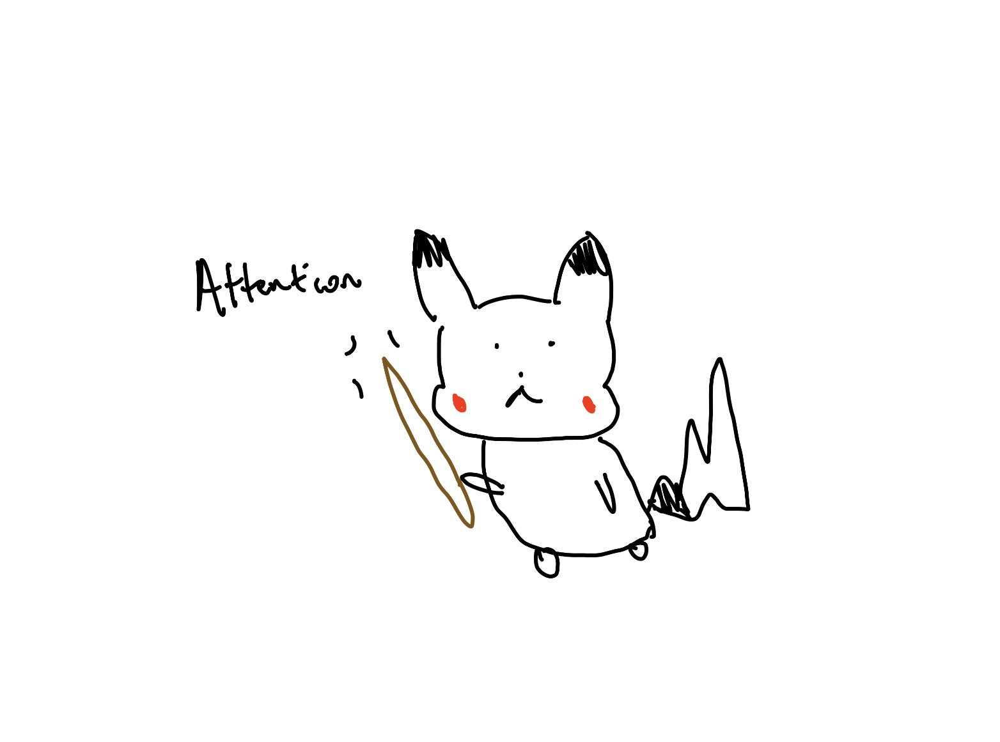